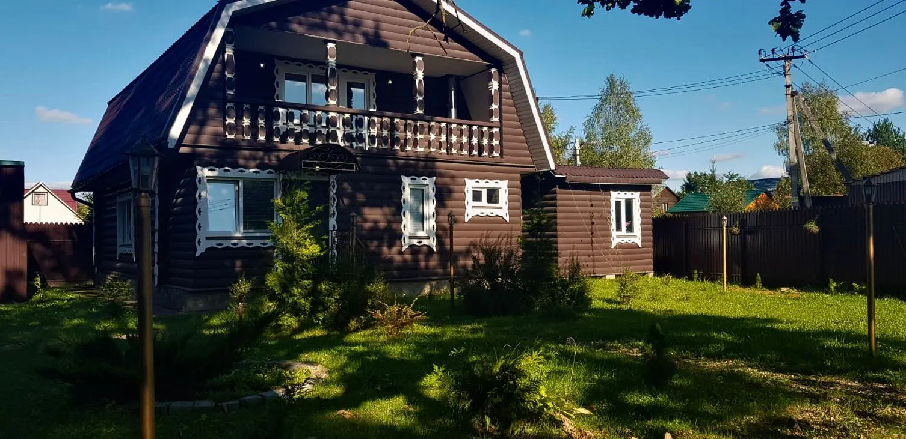
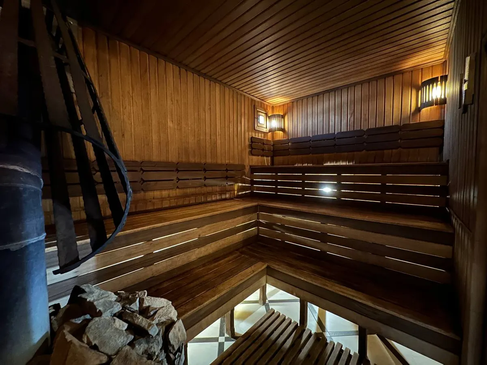
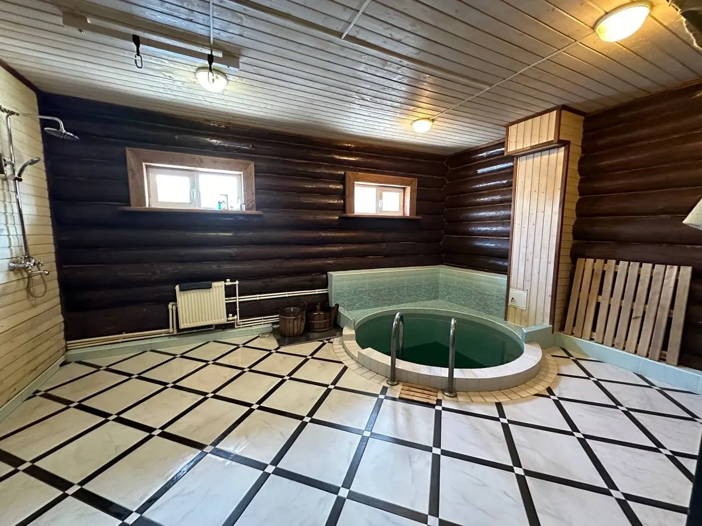
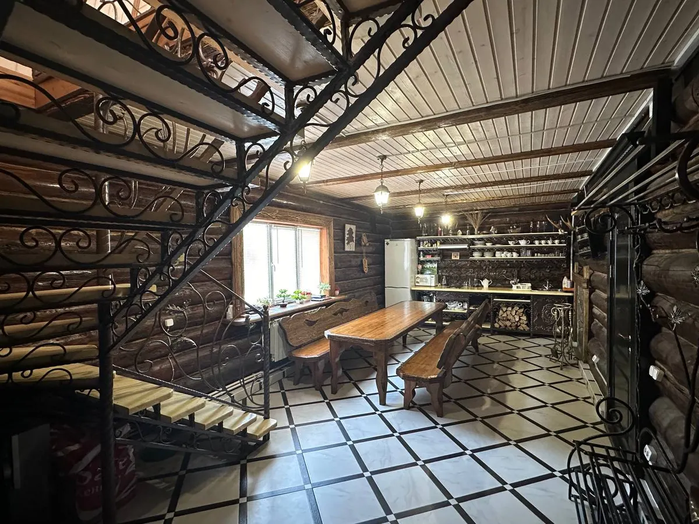

Дом с баней на дровах · СНТ Венера, рядом с Обнинском
Дом с баней на дровах для компании и семьи рядом с Обнинском
Русская парная на дровах, купель, дом 160 м² с кухней, караоке и ночёвкой на 8 мест, беседка с мангалом. Почасовая аренда и сутки - бронь звонком.
- 4,6 по 54 оценкам на Яндекс Картах
- Дом 160 м², баня на дровах и купель
- От 3 500 ₽ в час, от 5 часов, до 10 человек

Цены на дом с баней
Тариф взят с сайта владельца bdlykomorie.ru. Отдельно от аренды оплачиваются веники, уголь и доставка еды, цены на них назовут при брони.
Аренда дома с баней
- Почасовая арендадо 10 человек, минимум 5 часов, это от 17 500 ₽3 500 ₽ в час
- Аренда на суткизаезд с 14:00, выезд до 12:00, ночёвка на 8 мест, постельное бельё35 000 ₽ в сутки
Оплачивается отдельно
- Банные принадлежностивеники дубовые и берёзовые, одноразовые тапочки, полотенцауточнить
- Уголь для мангаладрова для бани и мангала на территории естьуточнить
- Доставка едыпрямая поставка из кафе-караоке «Сити»уточнить
Залог 5 000 ₽ возвращается при выезде, если в доме порядок. Актуальный тариф подтвердят при брони.
Как пройдёт визит
- 01
Звоните и называете день
День, время, сколько вас и по какому поводу. Администратор скажет, свободен ли дом.
- 02
Приезжаете к своему часу
СНТ Венера, сельское поселение Кривское, около 5 км от Обнинска. Заезд на сутки с 14:00. Откройте адрес в навигаторе заранее.
- 03
Парная и купель
Русская парная на берёзовых дровах, затем купель. В доме две душевые.
- 04
Отдых и ночёвка
Кухня-гостиная с караоке, беседка и мангал во дворе, на втором этаже две комнаты на 8 мест.



Что есть в Лукоморье
Русская парная на дровах
Отделка липой и абашем, печь на берёзовых дровах. Гость пишет: «Хорошая свободная парилка».
Купель
Круглая купель с мозаикой в душевой зоне. Гость пишет: «вода чистая».
Дом 160 м² с ночёвкой
Две комнаты на втором этаже, 8 спальных мест, постельное бельё. Гость пишет: «две семьи с детьми спокойно вместятся».
Беседка, мангал и двор
Закрытая территория с газоном, большая беседка, мангал и казан. Гость пишет: «На улице большая беседка с мангалом».
Отзывы с Яндекс.Карт
«Посещаем не впервый раз. Отличное место рядом с Обнинском. Хорошая свободная парилка и гостевая зона. Берем с ночевкой. Отзывчивые хозяева. Спасибо!»
Макс Брежнев · 5 апреля 2025
«Отличное местечко! Парилочка топится дровами, что придает особенное ощущение уюта и спокойствия. Сауна хорошо нагревается, не сухая, есть купель и две душевые. На втором этаже две большие спальни, две семьи с детьми спокойно вместятся. Все под рукой в 5 метрах хозяйственный и продуктовый магазинчики, на территории есть зона барбекю (мангал, казан ), большой запас дров , не нужно заморачиватся насчет углей и тп. Анастасия (руководитель банного комплекса) очень доброжелательная, все расскажет на все глупые вопросы ответит, всегда на связи в случае форс мажоров. Вообщем рекомендую , не пожалеете!»
Mr. Hugo · 5 января 2024
«Отличное место для банного отдыха, хорошая парилка с печкой на дровах, просторная, легко дышать. В душевой зоне небольшой бассейн, вода чистая. На кухне есть все, на втором этаже две комнаты. 8-12 человек с комфортом отдохнули! На улице большая беседка с мангалом.»
Алексей Кострюков · 2 июня 2023
Отзывы с карточки на Яндекс.Картах, без правок.
Частые вопросы
Сколько стоит?
По сайту владельца: 3 500 ₽ в час (минимум 5 часов, то есть от 17 500 ₽, до 10 человек) или 35 000 ₽ в сутки. Веники, уголь и доставка еды оплачиваются отдельно. Актуальный тариф подтвердят при брони.
Сколько часов можно брать?
При почасовой аренде минимум 5 часов. При аренде на сутки заезд с 14:00, выезд до 12:00.
На сколько человек?
Почасовая аренда рассчитана на компанию до 10 человек. Гость пишет: «8-12 человек с комфортом отдохнули». Спальных мест 8.
Можно ли с ночёвкой?
Да. На втором этаже две комнаты с коваными кроватями и диванами, всего 8 спальных мест, постельное бельё предоставляется. Гость пишет: «Берем с ночевкой».
Какие правила в доме?
Бережно относиться к имуществу, оставлять посуду чистой, вывозить за собой мусор, не ходить по дому в уличной обуви (полы тёплые) и не использовать игольчатые веники. Залог 5 000 ₽ вернут при выезде.
Что платится отдельно?
Банные принадлежности (веники дубовые и берёзовые, тапочки, полотенца), уголь для мангала и доставка еды из кафе-караоке «Сити». Цены на них назовут при брони.
Как оплатить?
На карточке в Яндекс Картах указана предоплата, безналичная оплата, онлайн-оплата и СБП.
Как найти и как позвонить?
Калужская область, Боровский район, сельское поселение Кривское, СНТ Венера, около 5 км от Обнинска. Бронь по телефону +7 (980) 713-17-00.
Выберите день и час
- Адрес
- СНТ Венера, сельское поселение Кривское, Боровский район
- Часы
- заезд с 14:00, выезд до 12:00
- Телефон
- +7 (980) 713-17-00